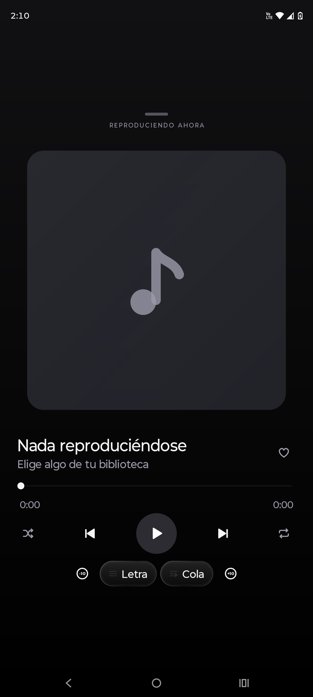
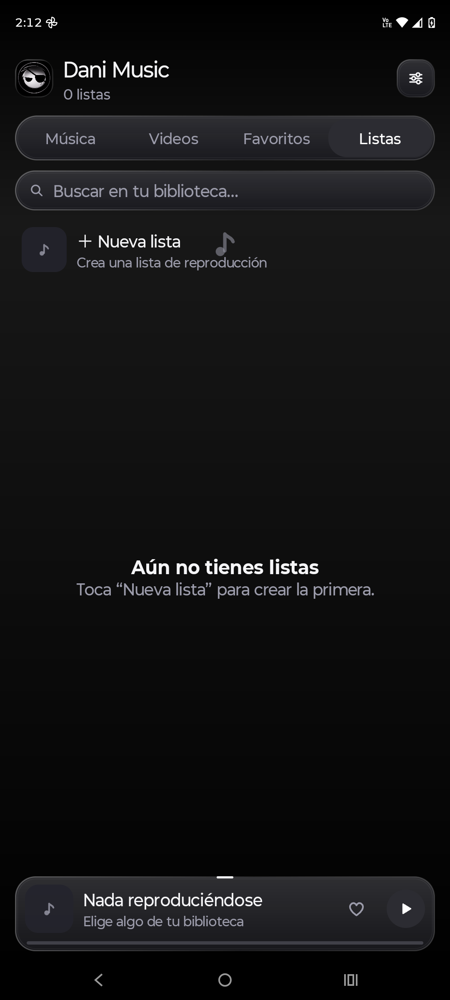

Reproducción local
Disfruta de la música almacenada en tu dispositivo.
Una experiencia sencilla para disfrutar de tu música local en Android.
Dani – Música Local es un proyecto Android enfocado en reproducir música almacenada directamente en el dispositivo.
Disfruta de la música almacenada en tu dispositivo.
Una propuesta enfocada en ofrecer una experiencia cómoda.
Aplicación distribuida mediante un paquete APK.
Conoce la interfaz de Dani.


